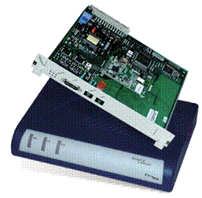

Комплектация Орион 3:


В Р-409МБ1 модемы «Орион 3» поставляются в двух вариантах исполнения:
- стоечный комплект – смонтирован в 19"стойку в шкафу МКД3 и включает в себя 4 модема;
- настольный комплект (Standalone) состоит из 2 модемов.
Настольные модемы имеет вид законченного изделия, пригодного для установки в качестве абонентского окончания,
и имеют возможность как локального, так и дистанционного питания.
Настольные модемы не могут подавать ДП в линию, не имеют функций генерации и шлейфа тока обтекания.
Возможности FlexDSL Orion 3:
- применение линейного кода Shdsl, Shdsl.bis, Shdsl.bis-Ext (ТС-РАМ16/32/64/128), что, с одной стороны,
позволяет обеспечит совместимость с предыдущей серией модемов, с другой – кодирование ТС-РАМ64/128
позволяет увеличить скорость или дальность соединения;
- поддержка расширенных возможностей стандарта Shdsl.bis Extended позволяет организовывать
симметричную передачу данных на скоростях до 15,2 Мбит/с по каждой паре;
- одновременная передача TDM-трафика и данных Ethernet;
- управляемый Layer 2 Ethernet switch (10/100baseT) с поддержкой VLAN support;
- применение режима работы объединения (агрегации) с автоматической балансировкой пропускной способности
DSL-каналов позволяет строить надёжные цифровые мосты со скоростями 60,8 Мбит/с по четырём парам;
- встроенный WEB-интерфейс;
- поддержка протокола SNMP v.1;
- поддержка до 9 регенераторов на каждое плечо ДП;
- существование нескольких конфигураций, хранящихся в памяти модуля, для возможности возврата к предыдущим настройкам системы;
- два уровня пользователей системы: admin и user, защищенных паролями;
- применение современной элементной базы.